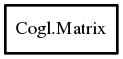

Matrix
Object Hierarchy:

Description:
public struct Matrix
A CoglMatrix holds a 4x4 transform matrix.
This is a single precision, column-major matrix which means it is compatible with what OpenGL expects.
A CoglMatrix can represent transforms such as, rotations, scaling, translation, sheering, and linear projections. You can combine these
transforms by multiplying multiple matrices in the order you want them applied.
The transformation of a vertex (x, y, z, w) by a CoglMatrix is given by:
x_new = xx * x + xy * y + xz * z + xw * w
y_new = yx * x + yy * y + yz * z + yw * w
z_new = zx * x + zy * y + zz * z + zw * w
w_new = wx * x + wy * y + wz * z + ww * w
Where w is normally 1
<note>You must consider the members of the CoglMatrix structure read only, and all matrix modifications must be done via the
cogl_matrix API. This allows Cogl to annotate the matrices internally. Violation of this will give undefined results. If you need to
initialize a matrix with a constant other than the identity matrix you can use
init_from_array.</note>
Content:
Static methods:
Methods:
- public Matrix? copy ()
Allocates a new Matrix on the heap and
initializes it with the same values as this.
- public void free ()
Frees a Matrix that was previously
allocated via a call to copy.
- public void frustum (float left, float right, float bottom, float top, float z_near, float z_far)
Multiplies this by the given frustum
perspective matrix.
- public float get_array ()
Casts this to a float array which
can be directly passed to OpenGL.
- public Bool get_inverse (out Matrix inverse)
Gets the inverse transform of a given matrix and uses it to initialize
a new Matrix.
- public void init_from_array (float array)
Initializes this with the contents
of array
- public void init_from_euler (Euler euler)
Initializes this from a
Euler rotation.
- public void init_from_quaternion (Quaternion quaternion)
- public void init_identity ()
Resets matrix to the identity matrix:
- public void init_translation (float tx, float ty, float tz)
Resets matrix to the (tx, ty, tz) translation matrix:
- public Bool is_identity ()
Determines if the given matrix is an identity matrix.
- public void look_at (float eye_position_x, float eye_position_y, float eye_position_z, float object_x, float object_y, float object_z, float world_up_x, float world_up_y, float world_up_z)
Applies a view transform this that
positions the camera at the coordinate (eye_position_x, eye_position_y, eye_position_z) looking
towards an object at the coordinate (object_x, object_y, object_z).
- public void multiply (Matrix a, Matrix b)
Multiplies the two supplied matrices together and stores the resulting
matrix inside this.
- public void ortho (float left, float right, float bottom, float top, float near, float far)
Multiplies this by a parallel
projection matrix.
- public void orthographic (float x_1, float y_1, float x_2, float y_2, float near, float far)
Multiplies this by a parallel
projection matrix.
- public void perspective (float fov_y, float aspect, float z_near, float z_far)
Multiplies this by the described
perspective matrix
- public void project_points (int n_components, ulong stride_in, void* points_in, ulong stride_out, void* points_out, int n_points)
Projects an array of input points and writes the result to another
array of output points.
- public void rotate (float angle, float x, float y, float z)
Multiplies this with a rotation
matrix that applies a rotation of angle degrees around the specified 3D vector.
- public void rotate_euler (Euler euler)
Multiplies this with a rotation
transformation described by the given Euler.
- public void rotate_quaternion (Quaternion quaternion)
Multiplies this with a rotation
transformation described by the given Quaternion.
- public void scale (float sx, float sy, float sz)
Multiplies this with a transform
matrix that scales along the X, Y and Z axis.
- public void transform_point (ref float x, ref float y, ref float z, ref float w)
Transforms a point whos position is given and returned as four float
components.
- public void transform_points (int n_components, ulong stride_in, void* points_in, ulong stride_out, void* points_out, int n_points)
Transforms an array of input points and writes the result to another
array of output points.
- public void translate (float x, float y, float z)
Multiplies this with a transform
matrix that translates along the X, Y and Z axis.
- public void transpose ()
Replaces this with its transpose.
- public void view_2d_in_frustum (float left, float right, float bottom, float top, float z_near, float z_2d, float width_2d, float height_2d)
Multiplies this by a view transform
that maps the 2D coordinates (0,0) top left and (width_2d,height_2d) bottom right the full viewport size.
- public void view_2d_in_perspective (float fov_y, float aspect, float z_near, float z_2d, float width_2d, float height_2d)
Multiplies matrix by a view transform that maps the 2D
coordinates (0,0) top left and (width_2d,height_2d) bottom right the full viewport size.
Fields:
- public float xx
- public float yx
- public float zx
- public float wx
- public float xy
- public float yy
- public float zy
- public float wy
- public float xz
- public float yz
- public float zz
- public float wz
- public float xw
- public float yw
- public float zw
- public float ww